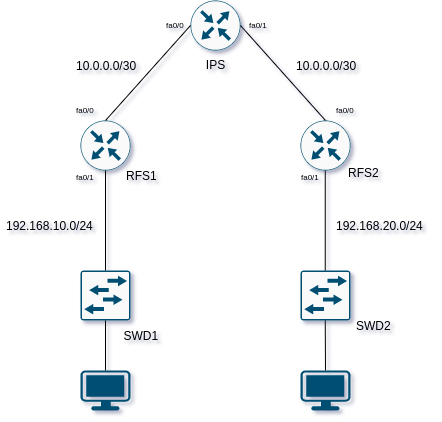

Solution pour émulation réseau sous LINUX
- Présentation
-
Pour émuler une architecture réseau, il existe plusieurs solutions comme GNS3 ou VIRL de CISCO.
Dans notre cas, on va chercher à émuler notre architecture avec des routeurs CISCO.
L'émulation va se faire avec le très connu Dynamips.
Dynamips est un émulateur de processeur MIPS, à proprement parler il permet d'émuler que les routeurs fonctionnant avec cette famille
de processeur. On est donc limiter sur les choix des routeurs qu'il est possible d'émuler, c'est le cas de la famille 7200. C'est ce dernier
que l'on va utiliser.
- Installation
-
Pour notre émulation nous aurons besoin de l'émulation réseau et routeurs.
Les fichiers nécessaires sont les suivants :
- Installation Dynamips
-
Avant d'installer dynamips avec les sources, il est necessaire d'installer le librairies suivantes :
- libelf-dev : les fichiers dev pour libelf
- libcap0.8-dev : les fichiers dev pour libcap
- Nous pouvons passer à la compilation des sources :
-
$ sudo apt install libelf-dev libpcap0.8-dev
$ git clone git://github.com/GNS3/dynamips.git
$ cd dynamips
$ mkdir build
$ cd build
$ cmake ..
- Installation Dynagen
-
A l'écriture de cet article, la version actuelle est la 0.11.0 .
Pour fonctionner dynagen, aura besoin de python, assurer qu'une version disponible.
-
$ tar xvf dynagen-0.11.0.tar.gz
$ sudo cp -pRvf dynagen-0.11.0/ /opt/dynagen/
$ sudo ln -sfn /opt/dynagen/dynagen /usr/bin/dynagen
$ dynagen --version
- Fichier IOS
-
Les images IOS ne sont pas libres, il vous faudra le routeur associé pour récupérer une image.
Ici nous allons utilisé une image de la famille 7200 pour nos routeurs.
-
$ mkdir ~/images
$ unzip -p images-c7200.bin > c7200.image
-
Notre image est donc disponible.
- Virtualisation
- Architecture
- Notre architecture sera la suivante :

- Fichier de configuration
- Le fichier de configuration sera lu par dynagen, et donnera les informations liées à notre architecture précédente,ce qui nous donne :
- ~/virtualisation/network.conf
-
[localhost]
ghostios = true
sparsemem = true
[[7200]]
image = ./c7200.image
model = 7200
ram = 512
[[ROUTER IPS]]
f0/0 = RFS1 f0/0
f0/1 = RFS2 f0/0
[[ROUTER RFS1]]
f0/1 = SWD1 1
[[ROUTER RFS2]]
f0/1 = SWD1 1
[[ETHSW SWD1]]
1 = access 1
[[ETHSW SWD2]]
1 = access 1
- Lancement du réseau
- dynagen est supplié par dynamips pour pouvoir fonctionner, pour virtualiser le fichier image entre autres.
- On va commencer par lancer dynamips sur le port 7200.
-
$ dynamips -H 7200 &
$ dynagen ~/virtualisation/network.conf
- Avec la commande list nous verifions que notre configuration a bien été prise en compte :
-
Dynagen management console for Dynamips and Pemuwrapper 0.11.0
Copyright (c) 2005-2007 Greg Anuzelli, contributions Pavel Skovajsa
=> list
Name Type State Server Console
IPS 7200 running localhost:7200 2000
RFS1 7200 running localhost:7200 2001
RFS2 7200 running localhost:7200 2002
SWD1 ETHSW always on localhost:7200 n/a
SWD2 ETHSW always on localhost:7200 n/a
=>
- Connexion
-
Nous pouvons, nous connectter aux différents équipements. A l'aide de la commande list
de dynagen.
-
On peut voir la ligne suivate :
"IPS 7200 running localhost:7200 2000 "
-
$ telnet localhost 2000